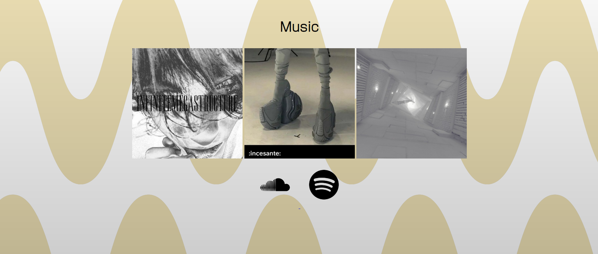
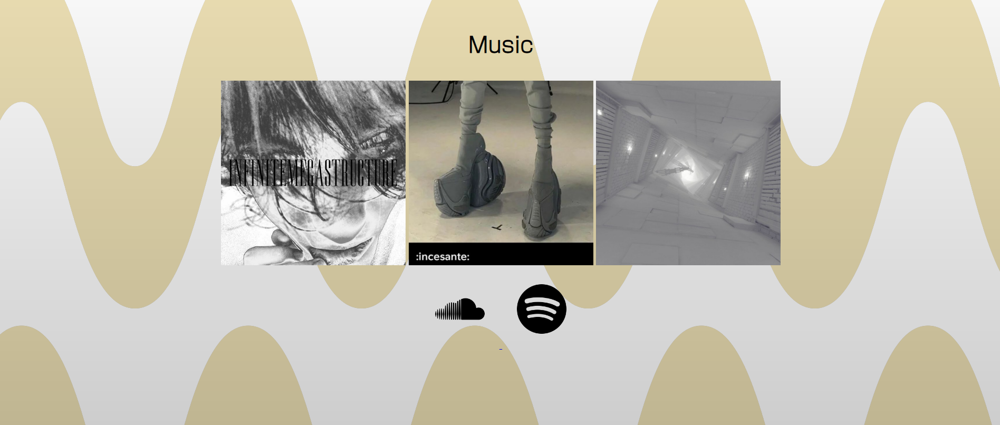

DeHaroVirtual
 

La creación de esta web se remonta a un amigo mío
y ha mi falta de práctica en el desarrollo web.
Mi amigo (@deharovirtual en instagram y twitter)
se enteró de que iba a hacer una web de ejemplo
amplia para mejorar mis habilidades, y me
preguntó si la quería hacer para él.
Yo obviamente accedí y empecé a trabajar.
A día de hoy la web se ha dejado en un
estado semi-acabado, en el que a pesar de
que mi amigo y yo teníamos más cosas pensadas
no se van a llevar a cabo por diversos motivos.
¿Cómo os organizasteis?
Aunque mi amigo era el que me enseñaba un poco
cómo quería la interfaz, el apartado creativo
se me asignó completamente a mí.
El fondo, el modo de enseñar y estructurar las imágenes,
al igual que los hipervínculos son todo diseño mío. He de
admitir que no fue fácil y estuve probando bastante.
¿Qué problemas te surgieron?
Creando esta web no tuve prácticamente ningún problema
ya que ya tenía experiencia previa con webs y no hice
nada nuevo ni con JS.
A pesar de esto, la web actualmente no está porteada
a móvil.
¿Dónde puedo ver la web?
Cualquiera que quiera puede visitar la web
mediante este link.
La web en sí no fue mucha cosa debido a que no
implementé nada nuevo y fué un proyecto
bastante ameno.
- Néstor Blanco 22/06/2023